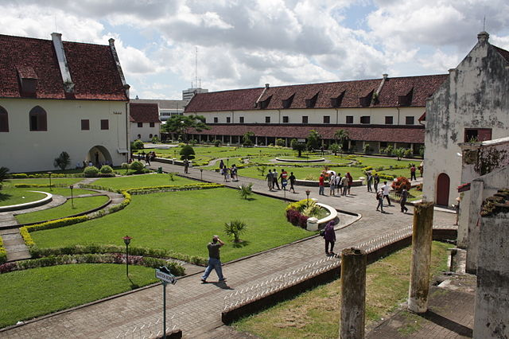

Pantai Losari
Pantai Losari is renowned for its stunning sunsets and vibrant waterfront atmosphere. Located in the heart of Makassar, it offers a long promenade perfect for leisurely walks, culinary treats, and cultural performances, making it a favorite spot among locals and tourists alike.
Fort Rotterdam
Fort Rotterdam, a historical gem in Makassar, was originally built in 1545 by the Gowa Kingdom. It stands as a testament to the region's rich history and Dutch colonial past. The fort is now a cultural museum showcasing artifacts and exhibits related to the history and culture of Sulawesi.
Bantimurung National Park
Bantimurung National Park, also known as the Kingdom of Butterflies, is located in Maros. It's famous for its biodiversity, especially the various species of butterflies. The park also offers stunning natural scenery with its waterfall, caves, and the surrounding karst mountains.